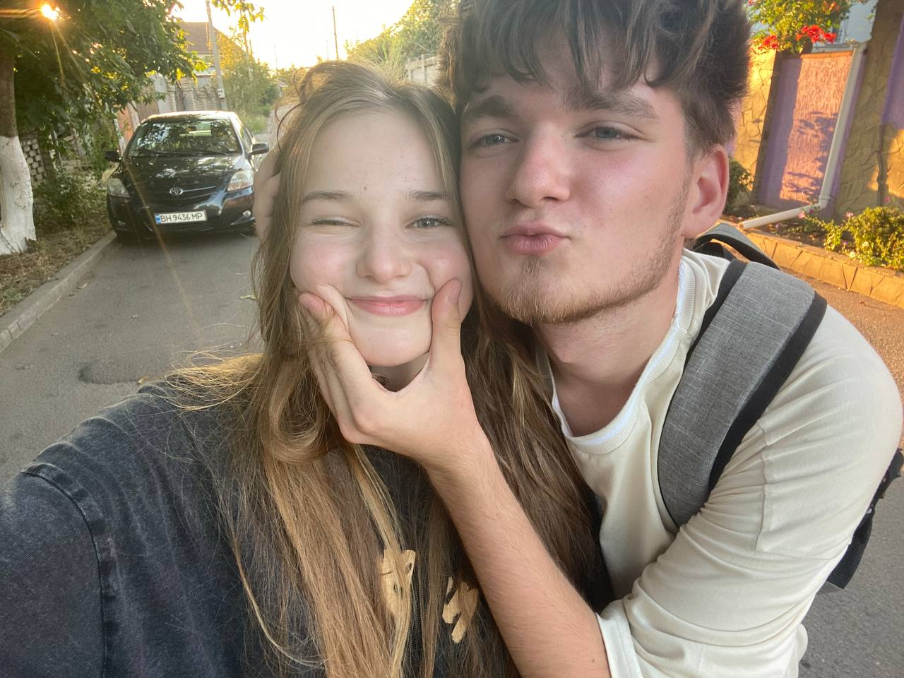
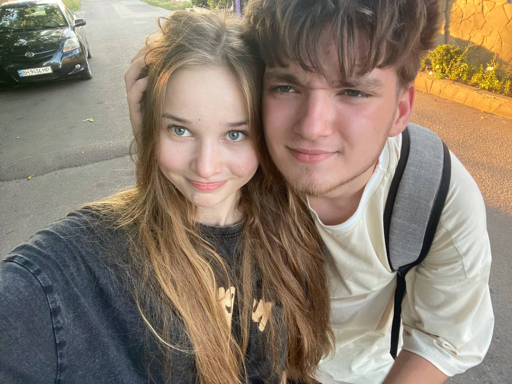
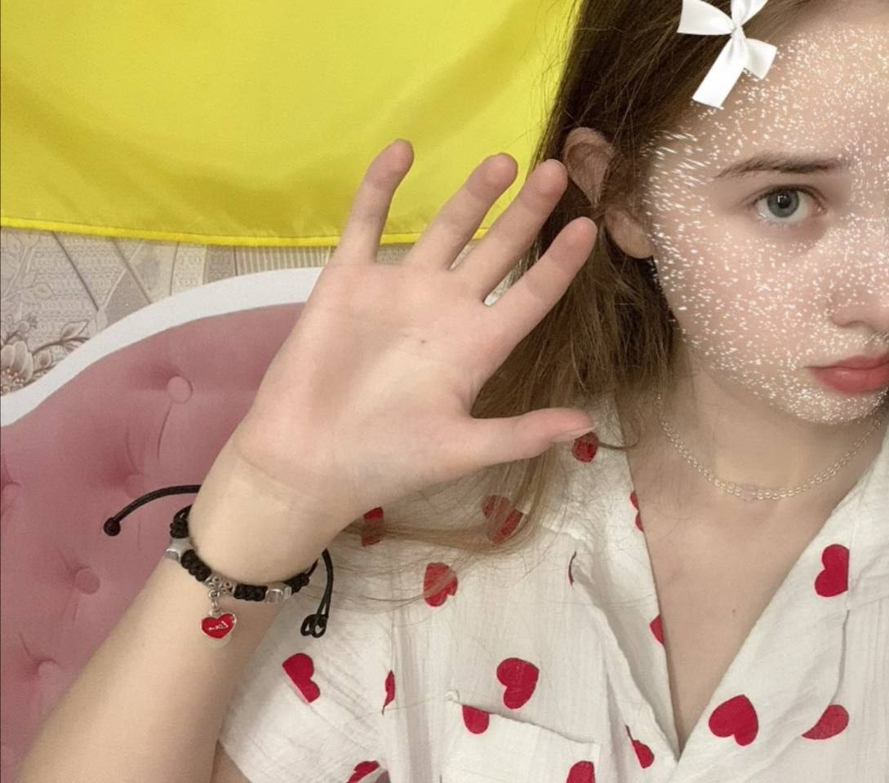
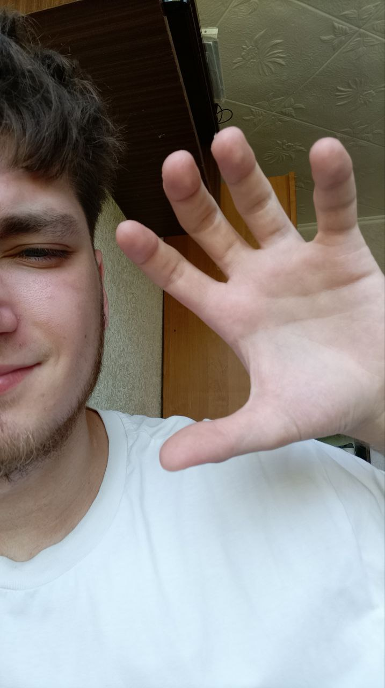

Що було ДО:
Було б добре почати з першого місяця, але те, що було перед ним також хочеться розказати та показати) Ось для прикладу декілька фото з наших перших прогулянок:
- 
- 
Які ж ми тут милі)
Перша наша прогулянка на жаль була геть коротка, але на скільки ж вона була класна! Досі з посмішкою згадую ті ніякові емоції, коли ми ще геть не знаємо одне одного, боїмося зробити щось неправильно.
А після того як попрощалися, в голові було тільки це: "Яка ж вона класна, сподіваюся, я нічого зайвого не сказав і не зробив..." "Сподіваюся, їй все сподобалось..." "А якщо я їй не сподобався?" 😳
В такі моменти розумієш, що це вже не просто дівчинка, з якою ти гуляєш, а дівчинка, яка тобі дійсно подобається. І з кожною прогулянкою хочеться проводити з нею все більше і більше часу. 💕
Перший місяць
В перший місяць відносин я закохувався у цю чарівну дівчину все сильніше і сильніше (зараз в принципі нічого не змінилось).

Саме сумне що ми з Маріною почали часто бачити лише коли вона переїхала в общагу, а це сталося лише в кінці місяця. Але не дивлячись на відстань наше спілкування та вогонь у відносинах ні разу не ставав меньше, а навпаки - ставав більше.
 